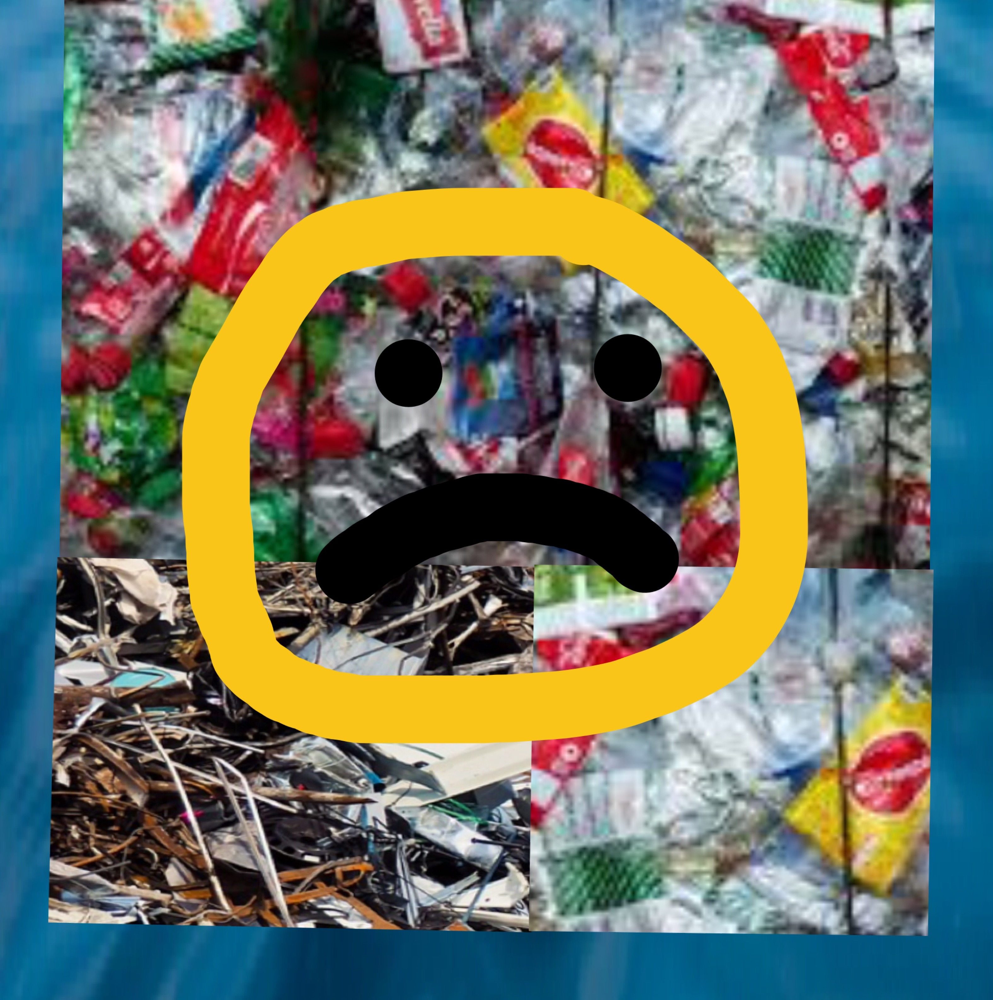
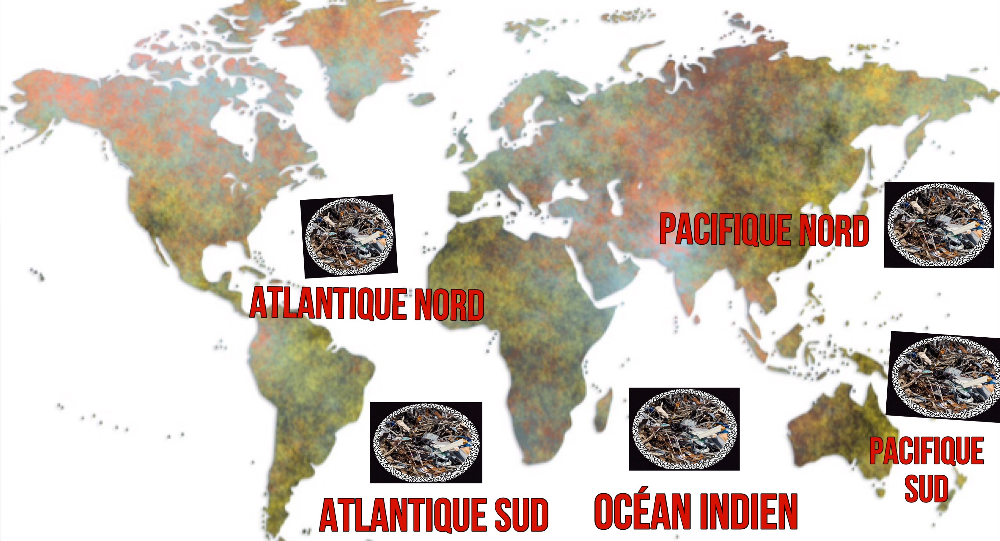
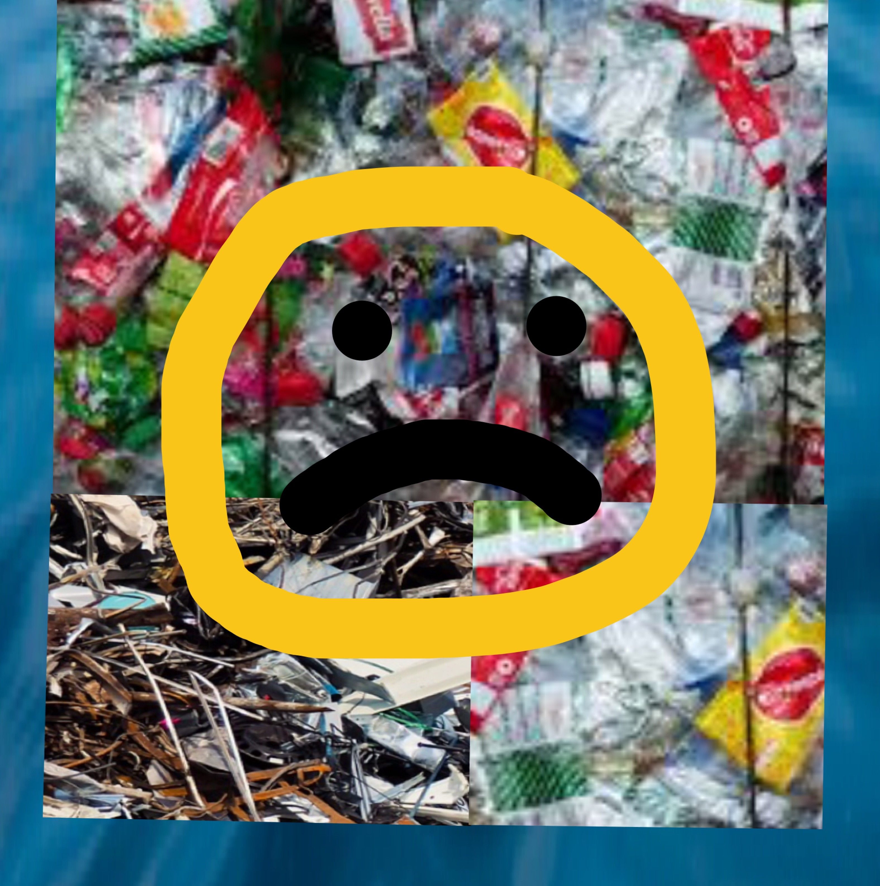
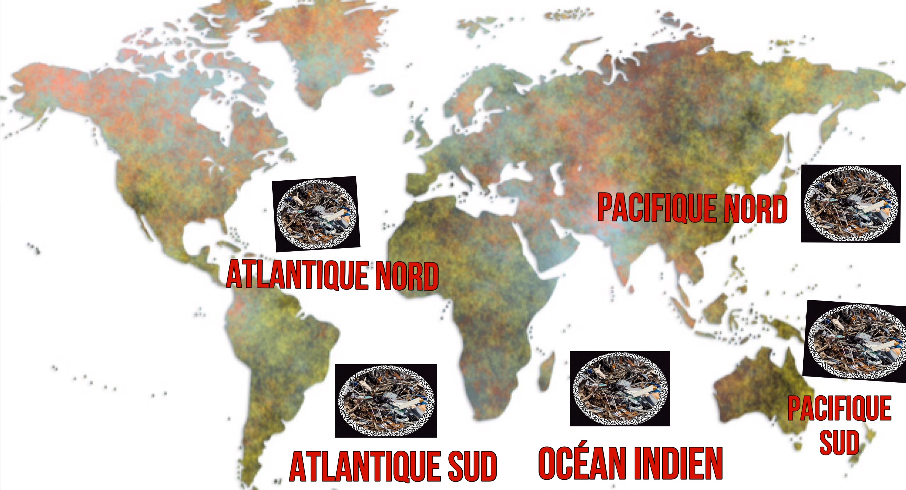

Salutation visiteur!
Un continent plastique (ou en réalité soupe de plastique) est une étendue de fragments de déchets recouvrant pratiquement toute la surface d'une partie de l'océan. Sais-tu que ceci est causé par plus de 6 milliards de kilos de plastiques déversés annuellement dans l'océan et qu'hystériquement ce sont 205 kilos de déchets faisant leur entré dans celle-ci .! Mais comment ces déchets arrivent à se rassembler dans un même endroit dans l'océan ? En fait, les déchets flottent sur la surface de l'océan et se dirigent vers le continent plastique les rassemblant, ce dernier est emprisonné par des vents et des courants marins qui circulent en tourbillon appelé « gyre »
Eh oui c'est le premier continent plastique découvert en 1997 par Charles Moore dans le nord-est de l'océan Pacifique. On le compare souvent à la taille de l'Afrique et de l'Europe !
Aujourd'hui on en compte 5 :
-le continent plastique du Pacifique nord (7ème continent)
-le continent plastique du Pacifique sud
-le continent plastique de l'océan Indien
-le continent plastique de l'atlantique sud
-le continent plastique de l'atlantique nord
Eh non, les continents plastiques sont les principales sources de déchets et malheureusement ces derniers sont confondus par les animaux marins avec de la nourriture.
Eh en première place du déchet le plus dangereux on trouve... LE PLASTIQUE ! En effet, d'après des études, les tortues ont une chance de 20% (soit 1/5 !) de mourir après avoir avalé du plastique !
Mais pourquoi un taux de risque aussi élevé ?
Eh bien, le plastique et un matériel non biodégradable, c'est-à-dire qu'il ne peut pas être détruit par des micro-organismes (bactéries, champignons etc.) et donc ce matériel va rester intact longtemps ! Celui-ci est donc difficile à digérer.
Les idées proposées par la page de Wikiglouglou concernant les plages sont les mêmes ici, voici un copier-coller:
-tu peux participer aux Initiatives Océanes ! Ce sont des nettoyages et des collectes de déchets prévues partout dans le monde (concernant les littoraux) par des bénévoles grâce à Surfrider Foundation Europe, une Association qui défend la gestion durable de l'océan (la qualité de l'eau dans le temps). Jette un œil sur leur site s'il te plaît , tu pourras voir les collectes prévues et pourquoi pas de participer à ces nettoyages avec des amis ou ta famille ! Tu peux même organiser ta propre collecte ! Lieu du site : https://www.initiativesoceanes.org/ . Il existe également d'autres organismes, renseignes-toi sur internet.
-tu peux ramasser les déchets près de chez toi, tu peux par exemple faire un aller-retour dans ta rue et ramasser les déchets que tu vois ! Tu peux t'équiper d'un sac qui regroupe tous les déchets. Par contre quand tu auras fini, trie bien les déchets ! Le mieux serrait d'habiter près de la mer car tu pourras faire la même chose sur une plage ^^.
-créer un moyen d'information concernant les déchets (Site internet, blog, comptes de réseaux sociaux, affiches publicitaires etc...).
Fautes d'orthographe, belles idées pour remplir cette page de Wikiglouglou ?
Contactez nous ici:
-Mail: lunetdevinf@gmail.com
-Youtube: https://www.youtube.com/channel/UCLADMe-lGDABHRG9gpjnofw

